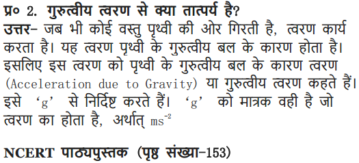
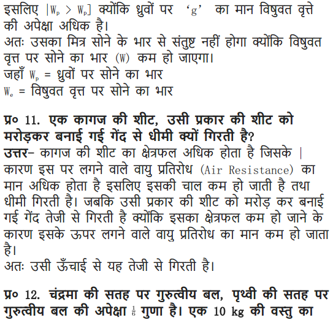

NCERT Solutions Class 9 Science Chapter 10 Gravitation – Here are all the NCERT solutions for Class 9 Science Chapter 10. This solution contains questions, answers, images, step by step explanations of the complete Chapter 10 titled Gravitation of Science taught in class 9. If you are a student of class 9 who is using NCERT Textbook to study Science, then you must come across Chapter 10 Gravitation. After you have studied lesson, you must be looking for answers of its questions. Here you can get complete NCERT Solutions for Class 9 Science Chapter 10 Gravitation in one place. For a better understanding of this chapter, you should also see Chapter 10 Gravitation Class 9 notes , Science.
NCERT Solutions for Class 9 Science Chapter 10 Gravitation
Topics and Sub Topics in Class 9 Science Chapter 10 Gravitation:
- Gravitation
- Gravitation
- Free Fall
- Mass
- Weight
- Thrust and Pressure
- Archimedes’ Principle
- Relative Density
These solutions are part of NCERT Solutions for Class 9 Science. Here we have given NCERT Solutions for Class 9 Science Chapter 10 Gravitation.
In – Text Questions Solved
NCERT Textbook for Class 9 Science – Page 141
Questin 1. Why is it difficult to hold a school bag having a strap made of a thin and strong string?
Answer: The force exerted by a thin and strong string is distributed to very less area and hence the force applied due to the bag is more, the pressure exerted on the body by thin straps will be more and hence will be more painful.
As pressure is inversely proportional to area, if the area is reduced pressure
Questin 2. What do you mean by buoyancy?
Answer: The upward force exerted by any fluid (liquid, gas) on an object is known as upthrust or buoyancy.
More Resources for CBSE Class 9
- NCERT Solutions
- NCERT Solutions Class 9 Maths
- NCERT Solutions Class 9 Social Science
- NCERT Solutions Class 9 English
- NCERT Solutions Class 9 Hindi
- NCERT Solutions Class 9 Sanskrit
- NCERT Solutions Class 9 IT
- RD Sharma Class 9 Solutions
Questin 3. Why does an object float or sink when placed on the surface of water?
Answer: The density of the objects and water decides the floating or sinking of the object in water.
The density of water is 1 gm/cm3.
- If the density of an object is less than the density of water then the object will float.
- If the density of an object is more than the density of water then the object will sink.
Formulae Handbook for Class 9 Maths and ScienceEducational Loans in India
Class 9 Science NCERT Textbook – Page 142
Questin 1. You find your mass to be 42 kg on a weighing machine. Is your mass more or less than 42 kg?
Answer: The weighing machine actually measures the weight of the body as the acceleration due to gravity ‘g’ is acting on the body. Hence the mass reading of 42 kg given by a weighing machine is same as the actual mass of the body. As mass is the quantity of inertia, it remains the same.
Questin 2. You have a bag of cotton and an iron bar, each indicating a mass of 100 kg when measured on a weighing machine. In reality, one is heavier than other. Can you say which one is heavier and why?
Answer: The heaviness of the bag can be given by density
Mass of both cotton bag and iron bag is same. But the volume of cotton bag is more than the iron bag.
Hence density is inversely proportional to volume. The bag of iron will be heavier.
Questions From NCERT Textbook for Class 9 Science
Question 19. In what direction does the buoyant force on an object immersed in a liquid act?
Answer: The buoyant force on an object immersed in a liquid acts upwards, i.e. opposite to the direction of the force exerted by the object.
Question 20. Why does a block of plastic released under water come up to the surface of water?
Answer. The floating or sinking of a body in the water is decided by the density of both the body and water’s buoyant force acting on the body by the liquid.
The density of plastic is less than the water and the buoyant force exerted by water on the plastiq block is greater than the force exerted by plastic on the water.
Questin 21. The volume of 50 g of a substance is 20 cm3. If the density of water is 1 gem 3, will the substance float or sink?
Answer.
As the density of a given substance is more than the density of water. The substance will sink in water.
Question 22. The volume of a 500 g sealed packet is 350 cm3. Will the packet float or sink in water if the density of water is lg cmr3? What will be the mass of the water displaced by this packet?
Answer:
NCERT Solutions for Class 9 Science Chapter 10 Gravitation and Floatation (Hindi Medium)




More Questions Solved
NCERT Solutions for Class 9 Science Chapter 10 Multiple Choice Questions
Choose the correct option:
- The device used to measure the purity of milk is
(a) hydrometer (b) lactometer
(d) hygrometer (d) maltometer - The cork floats while the nail sinks in the water, this is due to
(a) density of cork is more than nail
(b) density of nail is more than cork.
(c) density of cork is less than the density of water.
(d) density of iron is less than the density of water. - The relative density of silver is 10.8 and the density of water is 1o3 kg/m2. The density of silver is
(a) 1.8 x 1o4 N/m3 (b) 10.8 x 1o3 N/m3
(c) 1.8 x 1o4 kg/m3 (d) 10.8 x 1o4 kg/m3 - Buoyant force exerted by different fluids on a given body is
(a) same (b) different
(c) zero (d) negligible - Liquid A is denser than liquid B, a body of wood is dipped in both the liquids? The buoyant force experienced by the body in
(a) liquid A is more (b) liquid B is more
(c) liquid A is less (d) none of the above
Answer. 1 -(b), 2—(c), 3—(b), 4-(b), 5—(a).
NCERT Solutions for Class 9 Science Chapter 10 Very Short Answer Type Questions
Question 1. What is the S.I. unit of thrust?
Answer: Newton.
Question 2. What is the S.I. unit of pressure?
Answer: The S.I. unit of pressure = N/m2 = Pascal.
Question 3. Define thrust.
Answer: The net force exerted by a body in a particular direction is called thrust.
Question 4. Define pressure.
Answer: The force exerted per unit area is called pressure.
Question 5. Why is it easier to swim in sea water than in river water?
Answer: The density of sea water is more due to dissolved salts in it as compared to the density of river water. Hence the buoyant force exerted on the swimmer by the sea water is more which helps in floating and makes swimming easier.
Question 6. Why a truck or a motorbike has much wider tyres?
Answer: The pressure exerted by it can be distributed to more area, and avoid the wear and tear of tyres.
Question 7. Why are knives sharp?
Answer: To increase the pressure, area is reduced,
As pressure ∝ 1/Area hence the pressure or force exerted on a body increases.
Question 8. Why is the wall of dam reservoir thicker at the bottom?
Answer: The pressure of water in dams at the bottom is more, to withstand this pressure the dams have wider walls.
Question 9. Why do nails have pointed tips?
Answer: The force exerted when acts on a smaller area, it exerts larger pressure. So the nails have pointed tips.
Question 10. While swimming why do we feel light?
Answer: The swimmer is exerted by an upward force by water, this phenomenon is called buoyancy and it makes the swimmer feel light.
Question 11. Define density and give its unit.
Answer: The density of a substance is defined as mass per unit volume. Its unit is kg/m3.
Question 12. What is relative density?
Answer: The relative density of a substance is the ratio-of its density to that of water.
NCERT Solutions for Class 9 Science Chapter 10 Short Answer Type Questions
Question 1. A ship made of iron does not sink but the iron rod sinks in water, why?
Answer: The iron rod sinks due to high density and less buoyant force exerted by the water on it, but in case of ship the surface area is increased, the upthrust experienced by the body is more. So it floats on water
Question 2. Camels can walk easily on desert sand but we are not comfortable walking on the sand. State reason.
Answer: Camels feet are broad and the larger area of the feet reduces the force/ pressure exerted by the body on the sand. But when we have to walk on the same sand, we sink because the pressure exerted by our body is not distributed but is directional.
Question 3. What is lactometer and hydrometer?
Answer: Lactometer is a device used to find the purity of a given sample of milk. Hydrometer is a device used to find the density of liquids.
Question 4. The relative density of silver is 10.8. What does this mean?
Answer: It means that the density of silver is 10.8 times more than that of water. T
Question 5. he relative density of gold is 19.3. The density of water is 103 kg/m3? What is the density of gold in S.I. unit?
Answer:
Question 6. State Archimedes’ principle.
Answer: Archimedes’ principle—When a body is immersed fully or partially in a fluid, it experiences an upward force that is equal to the weight of the fluid displaced by it.
It is used in designing of ships and submarines.
Question 7. Two cork pieces of same size and mass are dipped in two beakers containing water and oil. One cork
floats on water but another sink in oil. Why?
Answer: The cork floats on water because the density of cork is less than the density of water, and another cork sinks in the oil because the density of cork is more than the oil.
Question 8. What are fluids? Why is Archimedes’ principle applicable only for fluids? Give the application of Archimedes’ principle.
Answer: Fluids are the substances which can flow e.g., gases and liquids are fluids. Archimedes’ principle is based on the upward force exerted by fluids on any object immersed in the fluid.
Hence it is applicable only for fluids.
Applications of Archimedes’ principle:
- It is used in designing of ship and submarine.
- It is used in designing lactometer, used to determine the purity of milk,
- To make hydrometers, used to determine the density of liquids.
NCERT Solutions for Class 9 Science Chapter 10 Long Answer Type Questions
Question 1. With the help of an activity prove that the force acting on a smaller area exerts a larger pressure?
Answer: Consider a block of wood kept on a table top. The mass of the wooden block is 5 kg. Its dimension is 40 cm x 20 cm x 10 cm.
Now, we have to find the pressure exerted by the wooden block on the table top by keeping it vertically and horizontally.
∴ The pressure exerted by the box in case (a) is more as compared to the pressure exerted in case (b).
The area is reduced and the pressure exerted is more.
This shows that pressure ∝ 1/area.
Pressure will be larger if the area is reduced.
Application:
- Nails have pointed tips.
- Knives have sharp edges.
- Needles have pointed tips.
NCERT Solutions for Class 9 Science Chapter 10 Activity -Based Questions
Question 1.
- Take an empty plastic bottle. Close the mouth of the bottle with an airtight stopper. Put it in a bucket filled with water. You see that the bottle floats.
- Push the bottle into the water. You feel an upward push. Try to push it further down. You will find it difficult to push deeper and deeper. This indicates that water exerts a force on the bottle in the upward direction. The upward force exerted by the water goes on increasing as the bottle is pushed deeper till it is completely immersed.
- Now, release the bottle. It bounces back to the surface.
- Does the force due to the gravitational attraction of the earth act on this bottle? If so, why doesn’t the bottle stay immersed in water after it is released? How can you immerse the bottle in water?
Answer: Yes, the bottle is attracted downwards by the earth’s gravitational force. On pushing the bottle with force in the water it does not remain there but comes up because of’the upward force exerted by water on the bottle. This upward force is called upthrust or buoyant force. When the upward force or buoyant force is greater than the downward force ‘g’ the bottle will float. But if downward force is greater than upward force, the bottle will sink. The upward force (buoyant force) acting on the bottle can be reduced by increasing the force on the bottle or by filling the bottle with sand, water etc.
Question 2.
- Take a beaker filled with water.
- Take an iron nail and place it on the surface of the water.
- Observe what happens.
Answer: The iron nail sinks as the density of nail is more and the downward force exerted on nail is more than the buoyant force.
Question 3.
- Take a beaker filled with water.
- Take a piece of cork and an iron nail of equal mass.
- Place them on the surface of water.
- Observe what happens.
Answer: The iron nail sinks as.the density of nail is more and the downward force exerted on nail is more than the buoyant force. The cost floats as the density of cost is less and the buoyant force exerted on it is more than the downward force.
Question 4.
- Take a piece of stone and tie it to one end of a rubber string or a spring balance.
- Suspend the stone by holding the balance or the string as shown in the figure (a).
- Note the elongation of the string or the reading on the spring balance due to the weight of the stone.
- Now, slowly dip the stone in the water in a container as shown in Fig. (b).
- Observe what happens to the elongation of the string or the reading on the balance.
Observations : - In Fig. (a) the elongation of the string is 6 cm.
- In Fig. (b) when the stone is dipped in water the length of string reduced to 5 cm.
- The length of the string in case (b) decreases due to the upward force exerted by water on the stone called as buoyant force.
NCERT Solutions for Class 9 Science Chapter 10 Value-Based Questions
Question 1. A milkman sold his milk in the city and always carried lactometer with him. The customers trusted him and his business flourished.
(a) What is lactometer?
(b) What is the principle of working of lactometer?
(c) What value of milkman is seen in this case?
Answer.
(a) Lactometer is a device that measures the purity of milk.
(b) The principle of lactometer is ‘Archimedes’ principle’. It states that when a body is immersed fully or partially in a fluid, it experiences an upward force that is equal to the weight of the fluid displaced by it.
(c) Milkman is very honest and trustworthy.
Question 2. Reeta was wearing a high heel shoe for a beach party, her friend told her to wear flat shoes as she will be tired soon with high heels and will not feel comfortable,
(a) Why would one feel tired with high heel shoes on beach?
(b) Give the unit of pressure.
(c) What value of Reeta’s friend is seen in the above act?
Answer:
(a) The high heel shoes would exert lot of pressure on the loose sand of beach and will sink more in the soil as compared to flat shoes. Hence large amount of force will be required to walk with heels.
(b) Unit of pressure is Pascal.
(c) Reeta’s friend showed the value of being helpful, concerned and intelligent.
Question 3. In the school fair, there was a game in which one need to find the heaviest ball without holding them in hand. Three balls were given and few disposable glasses were kept. Tarun saw his friend struggling to win the game but he was unable to find the heaviest ball. Tarun helped him by dipping the three balls one by one in the glass’es full of water upto the brim and finally they won the game.
(a) Why did Tarun told his friend to dip the balls one by one in completely filled glass of water?
(b) Name the principle used here.
(c) What value of Tarun is reflected in this case?
Answer:
(d) Tarun wanted to measure the amount of water displaced by each ball when dipped in water.
(b) The principle used is ‘Archimedes’ principle’.
(c) Tarun showed the value of being helpful, kind and intelligent.